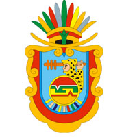

El Estado de Guerrero se encuentra situado en una región antiguamente llamada Zihuatlán (Lugar junto a las mujeres en náhuatl, Ñuu Ra en mixteco). El territorio que ocupa actualmente la entidad estuvo habitado por grupos nómadas que recorrían las distintas regiones en busca de alimento y refugio hace más de veinte mil años. Los vestigios más antiguos que se han localizado datan aproximadamente de hace 22 mil años y son los restos humanos hallados cerca de los límites de los estados de Guerrero y Morelos, en el lugar conocido como Cueva Encantada. En el actual territorio estatal, la identidad de los antiguos habitantes es causa de polémica, ya que para algunos autores los mismos olmecas que habitaron la región del Golfo de México también se asentaron en algunas de sus regiones.Guerrero es uno de los estados de la República con Producto Interno Bruto mediano, pues en 2011 registró 198 144 844 pesos, lo que lo situaba en el lugar número 22 a nivel nacional, con una contribución del 1,3 % al total nacional. El turismo es la actividad económica que más recursos deja al estado, pues aporta gran parte del PIB total del estado y emplea a miles de personas.96Durante 2016 11 millones 500 mil turistas visitaron Guerrero, además de la llegada de 39 cruceros. Los principales centros turísticos en el estado son Taxco, Zihuatanejo, Ixtapa Zihuatanejo y Acapulco.97 Los centros turísticos guerrerenses son muy visitados debido a su cercanía con la Ciudad de México. El estado de Guerrero presenta gran variedad de comidas, esto se debe al sincretismo de las culturas indígenas, española y francesa. Entre los platos típicos se encuentran los jumiles, aporreado, chalupitas, relleno, pozoles, moles, caldos guisados de pescados y mariscos salsas de chile, tortillas, frijoles que son consumidos de diversas maneras. La bebida alcohólica típica es el mezcal. Entre las no alcohólicas encontramos una gran gama en la que destacan las infusiones de hojas secas, conocidas como té, el chilate, creado a base de cacao y especias; aguas de limón, naranja, guayaba, mango, piña, tamarindo y otras frutas. La danza también se ejecuta en otros lugares del estado. También destacan las festividades de la población de Mochitlán, por cuyos callejones se pasean toros, y las danzas del 24 al 26 de julio, en honor a Santa Ana. En el estado de Guerrero, la celebración del Día de Muertos guarda características particulares, ya que los habitantes montan sus ofrendas a partir del 31 de octubre, y el sacristán hace repicar las campanas al mediodía, con lo que se anuncia la llegada de todos los santos. En las ofrendas, la comida se sirve en platos, cazuelas y vasos de barro; algo distintivo es el pan conocido como "caja de Heas", elaborado con harina de arroz; entre las flores, predominan el cempaxúchitl, la nube y el terciopelo; también se acostumbran las fotografías de los difuntos, las calaveras de azúcar, las veladoras. Se prende copal para recibir a los difuntos con un olor agradable, además de poner un camino de cal hacia el altar.La educación en el Estado de Guerrero se ha caracterizado por estar entre los últimos lugares del desarrollo nacional educativo. De acuerdo al Informe de Actividades 2005 del Programa de la Organización de las Naciones Unidas para el Desarrollo, entre los estados de México Guerrero tiene el lugar número 30 en aprovechamiento educativo, con un índice de 0,7491, el tercer sitio más bajo del país, sólo superado por Oaxaca y Chiapas.
